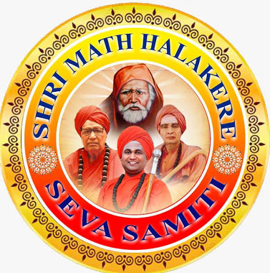
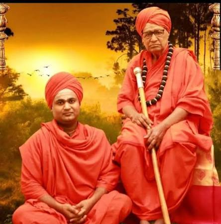
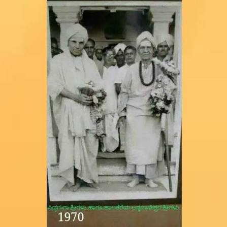
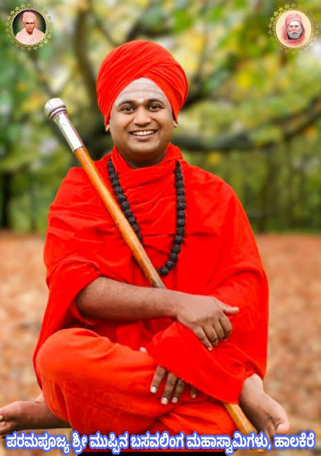
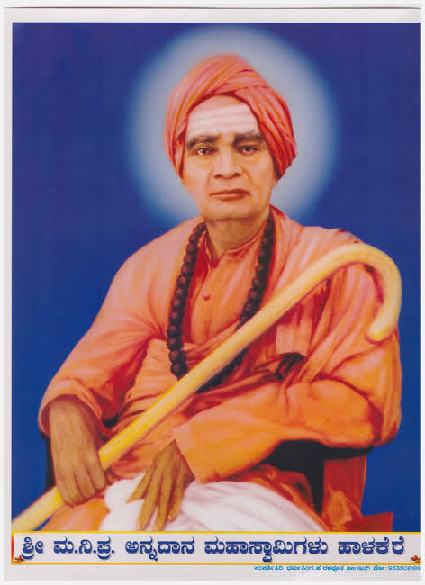
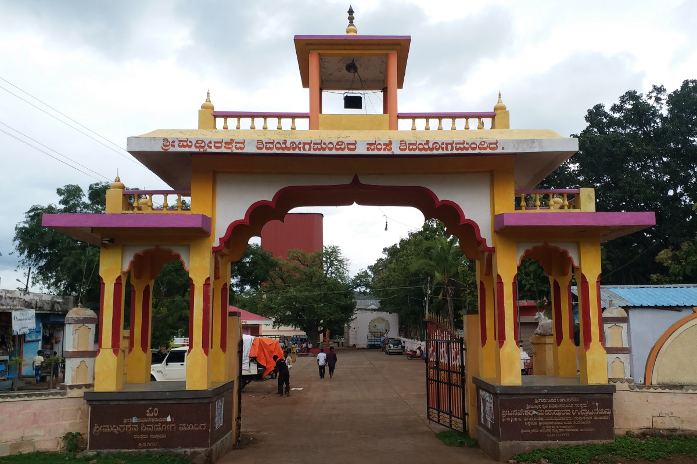

S A PU College
Naregal (ನರೇಗಲ್)

ಕಲ್ಯಾಣ ಕ್ರಾಂತಿಯ ನಂತರ ನಾಡಿನಲ್ಲಿ ಶರಣ ತತ್ವ ಮತ್ತು ಶಿವಾನುಭವವನ್ನು ಪುನರುಜ್ಜೀವನಗೊಳಿಸಲು ಇಳಕಲ್ ಚಿತ್ತರಗಿಯಿಂದ ಸಂಚರಿಸಿ ಹಾಲಕೆರೆ ತಪೋಭೂಮಿಯಲ್ಲಿ ಅಖಂಡ ತಪಸ್ಸುಗೈದ ಕರ್ತೃ ಶ್ರೀ ಅನ್ನದಾನೇಶ್ವರರ ಪಾವನ ಕ್ಷೇತ್ರ. ಪುಸ್ತಕದ ದಾಖಲೆಗಳಲ್ಲಿರುವ 27 ಶಾಖಾ ಮಠಗಳ ಜಾಲ, ನರೇಗಲ್ ಕಿವುಡ-ಮೂಕರ ಉಚಿತ ಶಾಲೆ, ಮಹಿಳೆಯರೇ ಎಳೆಯುವ 174th ಬೆಳ್ಳಿ ರಥೋತ್ಸವ ಹಾಗೂ ಶಿವಯೋಗ ಮಂದಿರದೊಂದಿಗೆ ಅವಿನಾಭಾವ ಸಂಬಂಧ ಹೊಂದಿರುವ ಧರ್ಮಪೀಠ.


19701970 Historic Samvada
 Halakere HQ
Halakere HQ
Shri Annadaneshwar Matha • Halakere
ಲಿಂ. ಡಾ. ಅಭಿನವ ಸಂಗನಬಸವ ಶ್ರೀಗಳ ಸುದೀರ್ಘ ಅಧ್ಯಕ್ಷತೆ, ನೂರಾರು ವಿರಕ್ತ ಪೀಠಾಧಿಪತಿಗಳ ತರಬೇತಿ ಹಾಗೂ ಏಷ್ಯಾದ ಅತಿ ಎತ್ತರದ ರಥ ನಿರ್ಮಾಣದ ಇತಿಹಾಸ.
ಉತ್ತರ ಕರ್ನಾಟಕದ ಗ್ರಾಮೀಣ ದಿವ್ಯಾಂಗ ಮಕ್ಕಳಿಗೆ ಸಂಪೂರ್ಣ ಉಚಿತ ಶಿಕ್ಷಣ, ಊಟ, ವಸತಿ ಮತ್ತು ಸನ್ನೆ ಭಾಷಾ ತರಬೇತಿ ನೀಡುವ ಆದರ್ಶ ಶಾಲೆ.
ಹಾಲಕೆರೆ ಕೇಂದ್ರ ಮಠ ಸೇರಿದಂತೆ ಬೇಲೂರು, ಕೋಡಿಕೊಪ್ಪ, ಇಟಗಿ, ಗಜೇಂದ್ರಗಡ, ಗದಗ, ದಾವಣಗೇರಿ ಮುಂತಾದ ಪುಸ್ತಕದಲ್ಲಿ ದಾಖಲಾದ 27 ಸ್ಥಳಗಳ ವಿವರ.
ಇಳಕಲ್ ಚಿತ್ತರಗಿಯ ತಪಸ್ಸಿನಿಂದ ಹಾಲಕೆರೆಯ ಗದ್ದುಗೆಯವರೆಗೆ, ಶತಮಾನಗಳಿಂದ ಹರಿದುಬಂದಿರುವ ಶರಣ ತತ್ವ ಮತ್ತು ಪವಾಡಗಳ ಸಮಗ್ರ ದಾಖಲೆ.
ಸುಮಾರು 16ನೇ ಶತಮಾನದಲ್ಲಿ ಕಲ್ಯಾಣದ ಬಸವಣ್ಣನವರ ತತ್ವಗಳನ್ನು ಮರುಸ್ಥಾಪಿಸಲು ಮೂವರು ಮಹಾತಪಸ್ವಿಗಳು ಒಟ್ಟಾಗಿ ಅನುಷ್ಠಾನ ಕೈಗೊಂಡರು: **ಶ್ರೀ ಗುರು ಮಹಾಂತ ಮಹಾಸ್ವಾಮಿಗಳು**, **ಶ್ರೀ ಅನ್ನದಾನೇಶ್ವರ ಮಹಾಸ್ವಾಮಿಗಳು**, ಹಾಗೂ **ಶ್ರೀ ಕೊಟ್ಟೂರೇಶ್ವರ ಮಹಾಸ್ವಾಮಿಗಳು**.
ಇಳಕಲ್ ಸಮೀಪದ ಚಿತ್ತರಗಿ ಸಂಸ್ಥಾನ ಮಠದಲ್ಲಿ ಮೂವರೂ ಅಖಂಡ ಇಷ್ಟಲಿಂಗ ಯೋಗದಲ್ಲಿ ಮುಳುಗಿದರು. ತಪಸ್ಸಿನ ನಂತರ ಲೋಕಕಲ್ಯಾಣಕ್ಕಾಗಿ ಶ್ರೀ ಮಹಾಂತ ಸ್ವಾಮಿಗಳು ಚಿತ್ತರಗಿಯಲ್ಲೂ, ಶ್ರೀ ಕೊಟ್ಟೂರೇಶ್ವರರು ಕೊಟ್ಟೂರು-ತುಂಗಭದ್ರಾ ತೀರದಲ್ಲೂ ನೆಲೆನಿಂತರೆ, ಶ್ರೀ ಅನ್ನದಾನೇಶ್ವರ ಸ್ವಾಮಿಗಳು ನರೇಗಲ್ಲು ಮಾರ್ಗವಾಗಿ ಹಾಲಕೆರೆ ತಪೋಭೂಮಿಗೆ ಆಗಮಿಸಿದರು.
ಶ್ರೀ ಅನ್ನದಾನೇಶ್ವರ ಸ್ವಾಮಿಗಳು ಹಾಲಕೆರೆಯ ಗುಡ್ಡಗಾಡು ಪ್ರದೇಶಕ್ಕೆ ಆಗಮಿಸಿ ಒಂದು ಹೆಮ್ಮರದ ನೆರಳಿನಲ್ಲಿ ತಪಸ್ಸಿಗೆ ಕುಳಿತರು. ಅವರ ತಪಃಶಕ್ತಿಯ ಪ್ರಭಾವದಿಂದ ಕಾಡಿನ ಕ್ರೂರ ಹುಲಿಗಳು ಮತ್ತು ಸಾಧು ಪ್ರಾಣಿಗಳು ಒಂದೇ ಜಾಗದಲ್ಲಿ ಶಾಂತವಾಗಿ ನೀರು ಕುಡಿದವು ಎಂಬ ನಂಬಿಕೆ ಭಕ್ತರಲ್ಲಿದೆ.
ಹಾಲಕೆರೆಯ ಗ್ರಾಮಸ್ಥರು ಈ ಮಹಾಯೋಗಿಯ ದೈವಿಕ ತೇಜಸ್ಸನ್ನು ಕಂಡು ಶರಣಾದರು. ಗ್ರಾಮದ ಪ್ರಮುಖರು ವಿನಂತಿಸಿಕೊಂಡ ಮೇರೆಗೆ ಶ್ರೀಗಳು ಇದೇ ಪವಿತ್ರ ಕ್ಷೇತ್ರದಲ್ಲಿ ಶಾಶ್ವತವಾಗಿ ನೆಲೆಸಿ ನಿತ್ಯ ಅನ್ನದಾಸೋಹದ ಜ್ಯೋತಿಯನ್ನು ಬೆಳಗಿಸಿದರು.
ಮಠಕ್ಕೆ ಬಂದ ಯಾರೊಬ್ಬರೂ ಹಸಿದ ಹೊಟ್ಟೆಯಲ್ಲಿ ಮರಳಬಾರದು ಎಂಬುದು ಶ್ರೀ ಅನ್ನದಾನೇಶ್ವರರ ಕಟ್ಟುನಿಟ್ಟಿನ ಆದೇಶವಾಗಿತ್ತು. ಭೀಕರ ಬರಗಾಲದ ಸಂದರ್ಭದಲ್ಲಿ ದಾಸೋಹ ಪಾತ್ರೆಯಲ್ಲಿ ಧಾನ್ಯ ಮುಗಿದಾಗ ಶ್ರೀಗಳು ತಮ್ಮ ತಪೋಬಲದಿಂದ ಪಾತ್ರೆಯನ್ನು ಮುಟ್ಟಿ ಆಶೀರ್ವದಿಸಿದಾಗ ಅನ್ನ-ಸಾಂಬಾರು ಎಂದಿಗೂ ಬರಿದಾಗದೆ ಸಾವಿರಾರು ಜನರಿಗೆ ಸಾಕಾಗುವಷ್ಟು ಉಕ್ಕಿ ಹರಿಯಿತು ಎಂಬುದು ಹಾಲಕೆರೆಯ ಅಪ್ರತಿಮ ಪವಾಡ.
ಶ್ರೀ ಅನ್ನದಾನೇಶ್ವರ ಸಂಸ್ಥಾನ ಮಠ ಹಾಲಕೆರೆಯ ಪುರಾತನ ದ್ವಾರಪಾಲಕ ಮತ್ತು ಲಿಂಗ ಪ್ರತಿಷ್ಠಾಪನೆಯ ದಿವ್ಯ ಚಿತ್ರಕಲೆ.
ಪುಸ್ತಕದ ದಾಖಲೆಗಳ ಪ್ರಕಾರ ಕರ್ತೃ ಶ್ರೀ ಅನ್ನದಾನೇಶ್ವರರಿಂದ ಹಾಲಿ ಪೀಠಾಧಿಪತಿಗಳವರೆಗಿನ 13 ಗುರುಗಳ ಪರಂಪರೆ.

Present Pontiff • Shri Annadaneshwar Samsthana Matha Halakere & Hampi Hemakoota Peetha
ಹಾಲಕೆರೆ ಮಹಾಸಂಸ್ಥಾನ ಹಾಗೂ ಹಂಪಿ ಹೇಮಕೂಟ ಶೂನ್ಯಸಿಂಹಾಸನ ಪೀಠದ ಪ್ರಸ್ತುತ ಸಾರಥಿಗಳು. ಸಂಸ್ಕೃತ, ವೇದಾಂತ, ಯೋಗ ಮತ್ತು ತಂತ್ರಜ್ಞಾನದಲ್ಲಿ ಪಾರಂಗತರಾಗಿದ್ದು, ಆಧುನಿಕ ಯುವಜನರಲ್ಲಿ ಧಾರ್ಮಿಕ ಜಾಗೃತಿ ಮೂಡಿಸುತ್ತಿರುವ ಯುವ ತಪಸ್ವಿಗಳು. ನರೇಗಲ್ ಕಿವುಡ-ಮೂಕರ ಶಾಲೆ, ಶಿಕ್ಷಣ ಸಂಸ್ಥೆಗಳು ಹಾಗೂ ಡಿಜಿಟಲ್ ಹೆರಿಟೇಜ್ ಸಂರಕ್ಷಣೆಯನ್ನು ಶ್ರದ್ಧೆಯಿಂದ ಮುನ್ನಡೆಸುತ್ತಿದ್ದಾರೆ.
Former President of Shivayog Mandira & Architect of Modern Halakere Matha
ಆಧುನಿಕ ಹಾಲಕೆರೆಯ ಯುಗಪುರುಷರು. ಶಿವಯೋಗ ಮಂದಿರ ಸಂಸ್ಥೆಯ ಅಧ್ಯಕ್ಷರಾಗಿ ನೂರಾರು ವಿರಕ್ತ ಸ್ವಾಮೀಜಿಗಳಿಗೆ ತರಬೇತಿ ನೀಡಿದವರು. ನರೇಗಲ್ನಲ್ಲಿ ಕಿವುಡ-ಮೂಕರ ಉಚಿತ ಶಾಲೆ ಸ್ಥಾಪಿಸಿದರು. ಮಹಿಳೆಯರೇ ಎಳೆಯುವ ವಿಶ್ವದಾಖಲೆಯ ಬೆಳ್ಳಿರಥೋತ್ಸವವನ್ನು ಆರಂಭಿಸಿ ಲಿಂಗ ಸಮಾನತೆಗೆ ನಾಂದಿ ಹಾಡಿದರು. ಶಿವಯೋಗ ಮಂದಿರದಲ್ಲಿ ಏಷ್ಯಾದ ಅತಿ ಎತ್ತರದ ರಥ ನಿರ್ಮಿಸಿದ ಕೀರ್ತಿ ಇವರಿಗೆ ಸಲ್ಲುತ್ತದೆ.

The Architect of 28 Branch Mathas Expansion & Temple Administration
ಹಾಲಕೆರೆ ಸಂಸ್ಥಾನದ ಆಸ್ತಿಪಾಸ್ತಿಗಳು, ಶಾಖಾ ಮಠಗಳ ಜಾಲ ಹಾಗೂ ವಾರ್ಷಿಕ ರಥೋತ್ಸವವನ್ನು ಅತ್ಯಂತ ಶಿಸ್ತಿನಿಂದ ಸಂಘಟಿಸಿದ ಹಿರಿಯ ಪೂಜ್ಯರು. ಉತ್ತರ ಕರ್ನಾಟಕ ಮತ್ತು ವಿಜಯನಗರ ಸಾಮ್ರಾಜ್ಯದ ಗಡಿ ಭಾಗಗಳಾದ ಬೇಲೂರು, ಬಾದಾಮಿ, ಬಾಗಲಕೋಟೆ, ಕೊಪ್ಪಳ ಮತ್ತು ಬಳ್ಳಾರಿ ಸೀಮೆಗಳಲ್ಲಿ ಮಠದ ಶಾಖೆಗಳನ್ನು ವಿಸ್ತರಿಸಿದರು.

Revered Mystic and Saint of Halakere Peetha
ತಮ್ಮ ದಿವ್ಯ ತಪಸ್ಸಿನಿಂದ ಮಠದ ಖ್ಯಾತಿಯನ್ನು ರಾಜ್ಯಾದ್ಯಂತ ಪಸರಿಸಿದ ಮಹಾಯೋಗಿಗಳು. ಭಕ್ತರ ಕಷ್ಟಗಳನ್ನು ಪರಿಹರಿಸಿದ ಪವಾಡ ಪುರುಷರು.
The Divine Spark and Eternal Gadduge of Halakere
ಹಾಲಕೆರೆ ಸಂಸ್ಥಾನದ ಆದಿ ಸಂಸ್ಥಾಪಕರು. ಚಿತ್ತರಗಿಯಿಂದ ಸಂಚರಿಸಿ ಹಾಲಕೆರೆಯಲ್ಲಿ ಜೀವಂತ ಸಮಾಧಿ (ಮಹಾ ಗದ್ದುಗೆ) ಪ್ರವೇಶಿಸಿದ ಜ್ಯೋತಿರ್ಲಿಂಗ ಸ್ವರೂಪಿಗಳು. ನಿತ್ಯ ಅನ್ನದಾಸೋಹದ ಮೂಲ ಸೂತ್ರಧಾರಿಗಳು.
ಪೂಜ್ಯ ಲಿಂ. ಡಾ. ಅಭಿನವ ಸಂಗನಬಸವ ಮಹಾಸ್ವಾಮಿಗಳ ದೀರ್ಘಾವಧಿಯ ಅಧ್ಯಕ್ಷತೆ, ಏಷ್ಯಾದ ಅತಿ ಎತ್ತರದ ರಥ ನಿರ್ಮಾಣ ಹಾಗೂ ನಾಡಿನ ಪೀಠಾಧಿಪತಿಗಳ ಸಂಸ್ಕಾರ ತಾಣ.
ಬಾಗಲಕೋಟೆ ಜಿಲ್ಲೆ ಬಾದಾಮಿ ಸೀಮೆಯ ಮಲಪ್ರಭಾ ನದಿಯ ತೀರದಲ್ಲಿರುವ **ಶಿವಯೋಗ ಮಂದಿರ**ವು ಇಡೀ ವೀರಶೈವ ಲಿಂಗಾಯತ ಮಠಗಳ ಮಾತೃ ಸಂಸ್ಥೆ. ಈ ಸಂಸ್ಥೆಗೆ ಹಾಲಕೆರೆಯ ಲಿಂ. ಡಾ. ಅಭಿನವ ಸಂಗನಬಸವ ಮಹಾಸ್ವಾಮಿಗಳು ದೀರ್ಘಕಾಲದವರೆಗೆ ಅಧ್ಯಕ್ಷರಾಗಿ ಸೇವೆ ಸಲ್ಲಿಸಿ ಕಾಯಕದ ಕ್ರಾಂತಿ ಮಾಡಿದರು.
**ವಿರಕ್ತ ಸ್ವಾಮೀಜಿಗಳ ತರಬೇತಿ:** ನೂರಾರು ಯುವ ಸಾಧಕರಿಗೆ ಸಂಸ್ಕೃತ, ವೇದ, ಆಗಮ, ಶರಣ ಸಾಹಿತ್ಯ ಮತ್ತು ಶಿವಪೂಜಾ ವಿಧಿಗಳನ್ನು ಕಲಿಸಿ ಕರ್ನಾಟಕ ಮತ್ತು ಮಹಾರಾಷ್ಟ್ರದ ನೂರಾರು ಮಠಗಳಿಗೆ ಪೀಠಾಧಿಪತಿಗಳನ್ನಾಗಿ ನಿಯೋಜಿಸಿದರು.
**ಅಧಿಕೃತ ಶಾಖಾ ಮಠ:** ಅಧಿಕೃತ ದಾಖಲೆಗಳ ಪ್ರಕಾರ ಶಿವಯೋಗ ಮಂದಿರದಲ್ಲೂ ಹಾಲಕೆರೆ ಸಂಸ್ಥಾನದ ಶ್ರೀ ಅನ್ನದಾನೇಶ್ವರ ಸ್ವಾಮಿ ವಿರಕ್ತಮಠವು ನೆಲೆಗೊಂಡಿದೆ.

ಶಿವಯೋಗ ಮಂದಿರದ ಪವಿತ್ರ ಪರಿಸರ
ಲಿಂ. ಡಾ. ಅಭಿನವ ಸಂಗನಬಸವ ಮಹಾಸ್ವಾಮಿಗಳ ಅಮೃತ ಹಸ್ತದಿಂದ ಶಿವಯೋಗ ಮಂದಿರದ ಇತಿಹಾಸದಲ್ಲಿ ಸುಮಾರು 100+ ಅಡಿಗಿಂತಲೂ ಎತ್ತರದ, ಇಡೀ ಏಷ್ಯಾದಲ್ಲೇ ಅತಿ ಎತ್ತರದ ಮರದ ರಥ ನಿರ್ಮಾಣಗೊಂಡು ಲೋಕಾರ್ಪಣೆಗೊಂಡಿತು. ಲಕ್ಷಾಂತರ ಭಕ್ತರು ಪಾಲ್ಗೊಳ್ಳುವ ಈ ರಥೋತ್ಸವವು ಹಾಲಕೆರೆ-ಶಿವಯೋಗ ಮಂದಿರದ ಶ್ರೇಷ್ಠ ಸಾಧನೆಗೆ ಸಾಕ್ಷಿಯಾಗಿದೆ.
ಪುಸ್ತಕದ ದಾಖಲೆಗಳಲ್ಲಿರುವ ಊರುಗಳ ಹೆಸರನ್ನು ಮಾತ್ರ ಇಲ್ಲಿ ನೀಡಲಾಗಿದೆ; ಹಾಲಕೆರೆ ಕೇಂದ್ರ ಪೀಠ ಮೊದಲನೆಯದಾಗಿದೆ.
ಮಠದ ಆವರಣದಲ್ಲಿರುವ ಕರ್ತೃ ಗದ್ದುಗೆ, ಅಖಂಡ ಅನ್ನಪೂರ್ಣೇಶ್ವರಿ ಭವನ ಹಾಗೂ ತಪಸ್ವಿಗಳ ಸಮಾಧಿ ಕ್ಷೇತ್ರಗಳು.
ಮಠದ ಗರ್ಭಗುಡಿ. 500+ ವರ್ಷಗಳ ತಪಸ್ಸಿನ ಪವಿತ್ರ ಶಕ್ತಿಸ್ಥಳ. ನಿತ್ಯ ರುದ್ರಾಭಿಷೇಕ, ಬಿಲ್ವಾರ್ಚನೆ ಹಾಗೂ ಇಷ್ಟಲಿಂಗ ಪೂಜೆ ನೆರವೇರುತ್ತದೆ. ಇಲ್ಲಿ ಪ್ರಾರ್ಥಿಸಿದರೆ ಕಾಯಿಲೆಗಳು ಶಮನಗೊಳ್ಳುತ್ತವೆ ಎಂಬ ಅಚಲ ನಂಬಿಕೆ ಇದೆ.
ಬಂದ ಭಕ್ತರೆಲ್ಲರಿಗೂ ದಿನದ 24 ಗಂಟೆಯೂ ಪ್ರಸಾದ ಒದಗಿಸುವ ಅಕ್ಷಯ ತಾಣ. ಎಷ್ಟೇ ಲಕ್ಷ ಜನ ಭಕ್ತರು ಬಂದರೂ ಎಂದೂ ಪ್ರಸಾದ ಕೊರತೆಯಾಗದಂತೆ ಅನ್ನದಾನೇಶ್ವರರು ಕೃಪೆ ತೋರಿದ ದಾಸೋಹ ಧಾಮ.
ಹಾಲಕೆರೆಯ ಹಿರಿಯ ತಪಸ್ವಿ ಗುರುಗಳ ಪಾವನ ಸನ್ನಿಧಿ. ಗಂಭೀರ ಸಾಧನೆ, ಧ್ಯಾನಾನುಷ್ಠಾನ ಹಾಗೂ ಮಾನಸಿಕ ಶಾಂತಿ ನೀಡುವ ದಿವ್ಯ ಕ್ಷೇತ್ರ.
2021 ರಲ್ಲಿ ಲಿಂಗೈಕ್ಯರಾದ ತ್ರಿವಿಧ ದಾಸೋಹಿಗಳ ಸ್ಮೃತಿ ಮಂದಿರ. ಈ ತಾಣವು ಶಿಕ್ಷಣ ಪ್ರೇಮಿಗಳಿಗೆ ಮತ್ತು ರೈತ ಚಳವಳಿಯ ಕಾರ್ಯಕರ್ತರಿಗೆ ಪ್ರೇರಣಾದಾಯಕ ಕೇಂದ್ರ.
“ಜ್ಞಾನವನ್ನು ಹಂಚುವುದು — ಪೀಳಿಗೆಯನ್ನು ನಿರ್ಮಿಸುವುದು.” ಹಾಲಕೆರೆ ಸಂಸ್ಥಾನದ ಸಮಾಜಮುಖಿ ಶಿಕ್ಷಣ ಮತ್ತು ಸೇವಾ ಯೋಜನೆಗಳು.
Founded by Lingaikya Dr. Abhinava Sanganabasava Swamiji
ಮಾತು ಬಾರದ, ಕಿವಿ ಕೇಳಿಸದ ಗ್ರಾಮೀಣ ಬಡ ಮಕ್ಕಳು ಸಮಾಜದಲ್ಲಿ ಯಾರ ಮೇಲೂ ಅವಲಂಬಿತರಾಗದೆ ಸ್ವಾಭಿಮಾನದಿಂದ ಬದುಕಲು ಲಿಂ. ಪೂಜ್ಯ ಡಾ. ಅಭಿನವ ಸಂಗನಬಸವ ಶ್ರೀಗಳು ನರೇಗಲ್ನಲ್ಲಿ ಈ ಉಚಿತ ವಸತಿ ಶಾಲೆಯನ್ನು ಸ್ಥಾಪಿಸಿದರು.
ಈ ವಿಶೇಷಚೇತನ ಶಾಲಾ ಮಕ್ಕಳ ಊಟ, ಬಟ್ಟೆ ಅಥವಾ ಶಿಕ್ಷಣಕ್ಕೆ ಕೈಜೋಡಿಸಲು ಮಠದ ಸೇವಾ ಸಮಿತಿಯನ್ನು ಸಂಪರ್ಕಿಸಿ.
ಹಾಲಕೆರೆ ಮತ್ತು ನರೇಗಲ್ನಲ್ಲಿ ಪ್ರಾಚೀನ ಸಂಸ್ಕೃತ ಗ್ರಂಥಗಳು, ವಚನ ಸಾಹಿತ್ಯ ಮತ್ತು ಶರಣ ದರ್ಶನ ಅಧ್ಯಯನ ಕೇಂದ್ರಗಳು.
ಪ್ರತಿದಿನ ಸಾವಿರಾರು ಭಕ್ತರಿಗೆ, ವಿದ್ಯಾರ್ಥಿಗಳಿಗೆ ಹಾಗೂ ಯಾತ್ರಾರ್ಥಿಗಳಿಗೆ ಬಿಸಿ ಪ್ರಸಾದ ನೀಡುವ ಅಖಂಡ ವ್ಯವಸ್ಥೆ.
ಗ್ರಾಮೀಣ ಜನರಿಗೆ ಉಚಿತ ನೇತ್ರ ಚಿಕಿತ್ಸೆ, ಆರೋಗ್ಯ ತಪಾಸಣೆ ಶಿಬಿರಗಳು ಹಾಗೂ ಔಷಧ ವಿತರಣಾ ಸೇವೆ.
ನರೇಗಲ್ ಮತ್ತು ಬೇಲೂರಿನ ಸಂಸ್ಥೆಗಳ ಜೊತೆಗೆ, ಅನ್ನದಾನೇಶ್ವರ ಶಿಕ್ಷಣ ಟ್ರಸ್ಟ್ಗಳ ಅಡಿಯಲ್ಲಿ ಇನ್ನೂ ಹಲವು ಶಾಲೆಗಳು ಮತ್ತು ಕಾಲೇಜುಗಳಿವೆ.
Naregal (ನರೇಗಲ್)
Belur (ಬೇಲೂರು)
S A PU College, ನರೇಗಲ್ ಮತ್ತು S A High School and PU College, ಬೇಲೂರು ಇವುಗಳ ಜೊತೆಗೆ ಅನ್ನದಾನೇಶ್ವರ ಶಿಕ್ಷಣ ಟ್ರಸ್ಟ್ಗಳ ಅಡಿಯಲ್ಲಿ ಇನ್ನೂ ಹಲವು ಶಿಕ್ಷಣ ಸಂಸ್ಥೆಗಳು ಕಾರ್ಯನಿರ್ವಹಿಸುತ್ತಿವೆ.
ಅನ್ನದಾನೇಶ್ವರ ಶಿಕ್ಷಣ ಟ್ರಸ್ಟ್ಗಳು ವಿದ್ಯಾರ್ಥಿಗಳಿಗೆ ಶಿಕ್ಷಣದ ಅವಕಾಶಗಳನ್ನು ಒದಗಿಸಿ, ಅವರ ಕಲಿಕೆ ಮತ್ತು ಭವಿಷ್ಯದ ಬೆಳವಣಿಗೆಗೆ ಸಹಕಾರಿಯಾಗಿವೆ.
ಮಹಿಳೆಯರೇ ಎಳೆಯುವ ಐತಿಹಾಸಿಕ ಬೆಳ್ಳಿ ರಥ, ಡೊಳ್ಳು ಕುಣಿತ, ನಂದಿಕೋಲು ಮೆರವಣಿಗೆ ಹಾಗೂ ಲಕ್ಷಾಂತರ ಭಕ್ತರ ಸಮ್ಮಿಲನ.
ಭಾರತದ ಧಾರ್ಮಿಕ ಇತಿಹಾಸದಲ್ಲಿ ಬಹುತೇಕ ಕಡೆ ರಥಗಳನ್ನು ಪುರುಷರು ಮಾತ್ರ ಎಳೆಯುವುದು ಪದ್ಧತಿ. ಆದರೆ ಹಾಲಕೆರೆ ಮಠದಲ್ಲಿ 12ನೇ ಶತಮಾನದ ಕಲ್ಯಾಣದ ಅಕ್ಕಮಹಾದೇವಿ, ಮುಕ್ತಾಯಕ್ಕರಂತಹ ಶರಣೆಯರ ಸ್ತ್ರೀ ಸಮಾನತೆಯನ್ನು ಎತ್ತಿಹಿಡಿಯಲು **ಲಿಂ. ಡಾ. ಅಭಿನವ ಸಂಗನಬಸವ ಮಹಾಸ್ವಾಮಿಗಳು ಮಹಿಳೆಯರೇ ಬೆಳ್ಳಿ ರಥವನ್ನು ಎಳೆಯುವ ಕ್ರಾಂತಿಕಾರಿ ಪದ್ಧತಿಯನ್ನು** ಪ್ರಾರಂಭಿಸಿದರು.
ಪ್ರತಿ ವರ್ಷ ಜಾತ್ರೆಯ ಶುಭದಿನ ಸಾವಿರಾರು ಮಹಿಳೆಯರು ಭಕ್ತಿ-ಭಾವದಿಂದ ಬೆಳ್ಳಿ ರಥದ ಹಗ್ಗವನ್ನು ಹಿಡಿದು ಎಳೆಯುವ ದೃಶ್ಯ ನಾಡಿನಲ್ಲೇ ಅಪ್ರತಿಮ.
1970 ರ ಅಪರೂಪದ ಛಾಯಾಚಿತ್ರಗಳು, ಬ್ರಿಟಿಷ್ ಗೆಜೆಟಿಯರ್ಸ್ ಹಾಗೂ ತಾಳೆಗರಿ ಹಸ್ತಪ್ರತಿಗಳ ಡಿಜಿಟಲ್ ಪರಿವೀಕ್ಷಕ.
1970 ರಲ್ಲಿ ಕರ್ನಾಟಕದ ತ್ರಿವಿಧ ದಾಸೋಹಿಗಳಾದ ಸಿದ್ಧಗಂಗಾ ಶ್ರೀ ಶಿವಕುಮಾರ ಸ್ವಾಮೀಜಿ ಹಾಗೂ ಹಾಲಕೆರೆ ಶ್ರೀಗಳು ಭೇಟಿಯಾದ ಪವಿತ್ರ ಕ್ಷಣ.
1884 ರ ಬ್ರಿಟಿಷ್ ಗೆಜೆಟಿಯರ್ ದಾಖಲೆಯಲ್ಲಿ ಹಾಲಕೆರೆ ಮಠದ ಅನ್ನದಾಸೋಹ ಹಾಗೂ ವಾರ್ಷಿಕ ರಥೋತ್ಸವದ ಐತಿಹಾಸಿಕ ವಿವರಣೆ.
ಸುಮಾರು 17ನೇ ಶತಮಾನದಲ್ಲಿ ಹಳೆಗನ್ನಡದಲ್ಲಿ ರಚಿತವಾದ ಕರ್ತೃ ಶ್ರೀಗಳ ಆಗಮನ ಮತ್ತು ಪವಾಡಗಳ ಕಂದ ಪದ್ಯಗಳು.
ಹಾಲಕೆರೆ ಶ್ರೀ ಅನ್ನದಾನೇಶ್ವರ ಮಹಾಸಂಸ್ಥಾನ ಮಠಕ್ಕೆ ಭೇಟಿ ನೀಡಲು ಮಾರ್ಗದರ್ಶಿ ಹಾಗೂ ಸೇವಾ ಸಂಕಲ್ಪ.
ರುದ್ರಾಭಿಷೇಕ, ಕರ್ತೃ ಗದ್ದುಗೆ ಮಹಾಪೂಜೆ
ಸಾಯಂ ಮಂಗಳಾರತಿ, ಭಜನೆ & ಪ್ರವಚನ
By Road: ಗದಗ, ರೋಣ, ಗಜೇಂದ್ರಗಡ, ಕುಷ್ಟಗಿ ಮತ್ತು ಬಾದಾಮಿಯಿಂದ ಹಾಲಕೆರೆಗೆ ನಿರಂತರ KSRTC ಬಸ್ ಸೌಲಭ್ಯವಿದೆ.
By Railway: ಹತ್ತಿರದ ರೈಲು ನಿಲ್ದಾಣ: **Gadag Junction (45 km)** ಅಥವಾ **Badami (50 km)**.
By Airport: ಹತ್ತಿರದ ವಿಮಾನ ನಿಲ್ದಾಣ: **Hubballi Airport - HBX (105 km)**.
ನಿತ್ಯ ಅನ್ನದಾಸೋಹ ಅಥವಾ ಕಿವುಡ-ಮೂಕರ ಶಾಲೆಗೆ ನಿಮ್ಮ ಸೇವಾ ಸಂಕಲ್ಪ ತಿಳಿಸಿ.